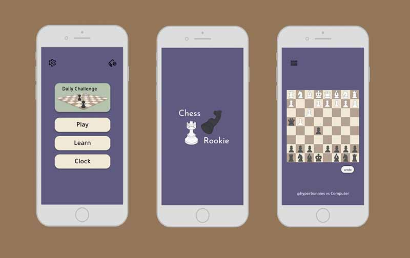

How can Chess be more accessible for players?
Interaction Digital Media 213
Visual design, research and conceptualization, testing, interaction design, animation
10 Weeks (April 2023 – July 2023)
Figma, AfterEffect, Illustrator
For one of my Interaction Digital Media class, I was assigned a redesign on a mobile app. This solo project entailed rebranding the app of our choice with a final animation video showcasing its full functionality.
ChessRookie is a rebrand of Chess Free, a free online chess game for iPhone and iPod touch. The app supports both 1 player and 2 player gameplay, so you can play against friends or test your skills against a challenging computer opponent. The app offers many chess features including daily puzzles, score tracking, difficulty level adjustability, and board rotation for two players.
I downloaded the app originally to be able to have access to the game as the avid Chess addict that I am. However, the flow of the app is quite outdated with many pain points as a user perspective and the UI includes horrific colors and design choices. I decided to redesign the app and add more customization abilities with the addition of a clock and overall a more modern design.
My user persona is Alex who is a long time chess player, based off of my actual friend, who coaches chess as his side job. He needs to be challenged during his free times and have the opportunity to practice the game whenever he needs.
My color palette was chosen relatively neutral for specific colors. I kept the main wood colors for the “board” the same and chose the others to be ones that could highlight the game. Instead of having the semi realistic design, I decided to go for a more animated and cartoonish style to simulate more as a game. The font and the icons also are chosen to represent a light and enjoyable aesthetic.
I turned the app into a simple and convenient game with clear intentions and minimalistic
A loading screen
A firework winning animation
Clock to indicate a person’s turn
a more visually appealing logo screen